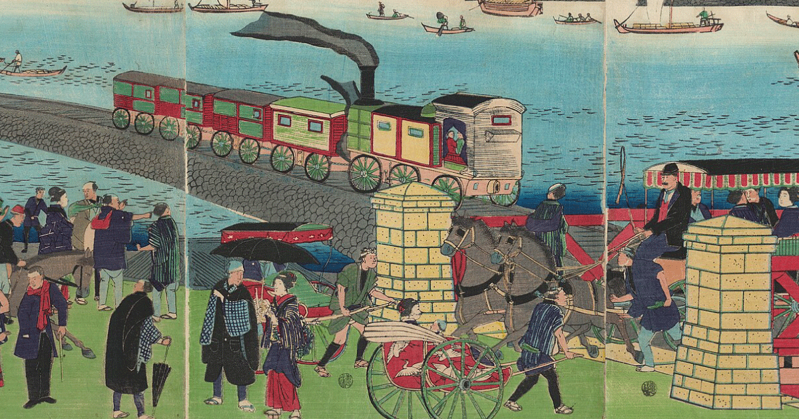
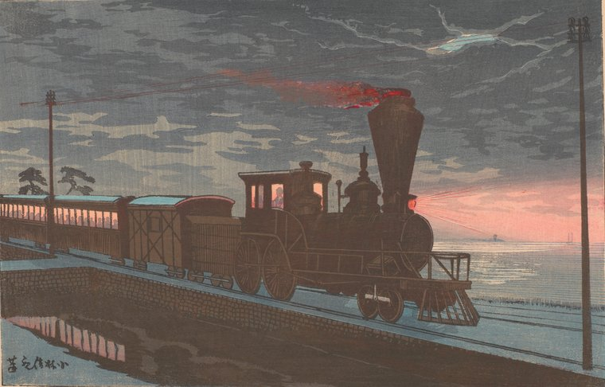

このアプリについて
明治18年（1885）の東京を、当時の汽車や鉄道馬車、そして自分の足で移動したら、どれくらいかかったのでしょう。今昔東京往来便覧は、出発地と目的地を選ぶだけで、今の電車と明治18年の移動を並べて見比べられる地図です。
できること
-
今と明治の所要時間を比べる
経路と所要時間を、今の電車と明治18年とで並べて出します。明治の汽車は当時の時刻表どおりに走るので、何時に出るかで経路が変わります。
-
当時の運賃がわかる
汽車と鉄道馬車の運賃を、当時の運賃表から計算します。単位は銭（100銭で1円）。下等・中等・上等の3つを出します。
-
名所を浮世絵・錦絵で
沿線の名所40か所を、歌川広重や明治の小林清親の絵とともに紹介します。当時の茶屋や料理屋、横浜の牛鍋屋やビール醸造所の跡もあります。
つかいかた
- 出発地と目的地を選ぶ 入力欄に「新宿」「にほんばし」などと入れると、今の駅と明治の地名の候補が出ます。選べるのは、今の8路線の駅（山手線の内側と、赤羽・横浜方面）と、その駅から1km以内の明治の地名です。
- 出発時刻を決める はじめは、ページを開いた時刻になっています。汽車は1日に数本しかないので、時刻を変えると結果が大きく変わることがあります。
- 結果を見る いちばん上に所要時間の比較、その下のタブで「当時の経路」「現在の経路」「沿線の見どころ」「解説」「根拠」を切り替えます。スマホでは、結果は画面の下から出てきます。
- 地図を見比べる 左が今の地図、右が明治の地図（迅速測図）です。真ん中のつまみを左右に動かすか、「重ね合わせ」にして透かして見られます。
- 名所の吹き出しを押す 絵と説明のカードが開きます。「目的地にする」で、そこまでの経路も出せます。
右上の設定（スマホではメニュー）から、地図の表示方法や、鉄道馬車の待ち時間などの仮定の値を変えられます。
たとえば、新宿駅から日本橋へ
11時30分に新宿駅を出ると、こうなります。
明治の汽車・馬車の経路は、新宿停車場で55分待って12時25分発の品川線に乗り、赤羽で日本鉄道に乗り換えて上野へ。上野から鉄道馬車で日本橋に着きます。運賃は下等で24銭〜（上等なら73銭〜）。歩いた方が少し早いのに、待ってでも乗りたくなる。そんな当時の移動の感覚を味わってみてください。
明治の移動は、こう計算しています
- 汽車
- 官設鉄道（新橋–横浜）、品川線（新橋–赤羽）、日本鉄道（上野–赤羽）の3路線。日本で最初の鉄道（1872年開業）で横浜まで行けます。明治18年5月に出た時刻表『鉄道汽車便覧表』（国立国会図書館）から、列車ごとの発車時刻を写しました。出発時刻より後に出る列車にだけ乗れます。運賃も同じ本の運賃表からとっています。
- 鉄道馬車
- 東京馬車鉄道（新橋–上野–浅草、浅草–日本橋）。速さは、新橋から浅草まで46分という記録から出しました。何分おきに走っていたかは資料が見つかっていないので、待ち時間は5分、運行は7時から20時と仮に決めています。運賃は1回2銭〜です。
- 徒歩
- 東海道・中山道・甲州街道などの街道と、町の道を歩きます。速さは時速4kmと仮に決めています。
「汽車・馬車を優先」について
はじめからオンになっています。オンのときは、駅で長く待つことになっても、歩く時間がなるべく短い経路を選びます（歩く1分を、待つ4分ぶんと数えています）。最初の駅で長く待つときは、「出発を何時に遅らせても同じ汽車に間に合います」と知らせます。オフにすると、いちばん早く着く経路を出します。
名所と絵

地図の吹き出しを押すと、名所の絵と説明が出てきます。絵の多くは、江戸の終わりの歌川広重『名所江戸百景』と、明治の東京を光と影で描いた小林清親の作品です。
上の清親の絵は、高輪の海の上に築いた堤（高輪築堤）を、夜に汽車が走る様子です。この堤の石垣は2019年に高輪ゲートウェイ駅のそばの工事で見つかり、今は国の史跡になっています。明治の汽車が走った場所が、今の駅の足もとに残っているのです。
明治や江戸の絵や写真が見つからない店（木村屋、神谷バーなど）は、今の写真で紹介しています。
知っておいてほしいこと
- 経路と所要時間は推定です。当時の実際の移動を、そのまま再現したものではありません。
- 資料が見つかっていない値は「仮定」と書き、設定のスライダーで変えられるようにしています。資料にもとづく値には「出典あり」と書いています。
- 明治の駅や街道の位置は、今の地名や駅の位置からのおおよそです。一部の道は「道筋は推定」と表示します。
- 汽車の時刻表は明治18年5月のものです。その年の3月の開業時や11月の改正の時刻は入れていません。
- 名所の説明の多くは、Wikipedia などをもとにしていて、一次資料での確認はこれからです。説明ごとに出典を載せています。
- 今の電車は8路線（山手線、中央線快速、銀座線、丸ノ内線、京浜東北線（上野–赤羽、品川–桜木町）、埼京線 池袋–赤羽、東海道線 品川–横浜）だけで計算しているので、実際より遅く出ることがあります。今の電車の運賃は出していません。
出典
- 汽車の時刻表・運賃：松永武英編『鉄道汽車便覧表』松陰堂、明治18年5月（国立国会図書館デジタルコレクション、パブリックドメイン）
- 古地図：迅速測図（農研機構農業環境研究部門「歴史的農業環境閲覧システム」） CC BY 2.1 JP
- 地図：地理院タイル
- 駅座標：© OpenStreetMap contributors
- 名所の絵・写真：Wikimedia Commons から。作品名・作者・所蔵・権利は、名所のカードに一枚ずつ載せています
つくり
HTML・CSS・JavaScript と地図ライブラリ MapLibre GL JS で作っています。経路の計算はすべてブラウザの中で行い、GitHub Pages で公開しています。開発には Claude Code を使い、時刻表の書き写しや名所の調べものも手伝ってもらいました（時刻表は人が画像と照らし合わせて確かめています）。